SIDE QUEST / 001
PIXEL PAWS✦
Desvie dos obstáculos. Colecione boas tentativas.
O próximo recorde pode ser seu.

Seu player 02 está pronto.▶ PIXEL PAWS
PONTOS 00000RECORDE 00000
ESPAÇO / ↑ / TOQUE
01 / PULE
Use espaço, ↑ ou toque na tela. Cada salto conta.
02 / ENCONTRE O RITMO
O cenário acelera aos poucos. Observe a distância.
03 / TENTE DE NOVO
Seu melhor resultado fica salvo neste navegador.